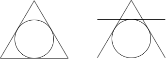

类型：组合数学
定义：三维欧氏空间中的点称为整点，当且仅当x,y,z坐标都是整数，例如(1,1,2)，(-2,6,-2)。从空间中任取
答案：8
解答：
如果两个整点的中点还是整点，说明
类型：直线与圆
平面直角坐标系中有三条直线:
答案：{
}
解答：
观察三条直线的结构，容易注意到它们到原点的距离都为1。所以，它们都是单位圆的切线。又因为围成了等边三角形，所以有两种情形：要么单位圆作为等边三角形的内切圆，要么单位圆作为等边三角形的外切圆(注意不是外接圆)。如下图所示：

类型：古典概型
考察：逻辑能力
任取一户有两个孩子的家庭，已知其中一个是女孩，则另一个是女孩的概率为
答案：
?
本题是一道争议很大的题目，被称为两孩悖论。在著名的概率论科普读物《醉汉的脚步》中，作者认为本题的答案是
我知道，第一次看到上面的答案时，你会感到惊讶。实际上，上面的答案虽然有一定的道理，但也并不完全正确。迄今为止，包括《醉汉的脚步》作者蒙洛迪诺在内的很多人都对上面的答案提出了质疑。
我们先来看看蒙洛迪诺在书中写提出的解法：
这是一个古典概型问题，考虑出生顺序，样本空间为{男，男}，{男，女}，{女，男}，{女，女}，现在已知有一个是女孩，那么{男，男}这种情况就不可能了，样本空间缩小为{女，女}，{男，女}，{女，男}，因此概率为
如果把条件改成“已知其中一个是女孩，名字叫佛罗里达”，我们可以用女F表示叫佛罗里达的女孩，女NF表示不叫佛罗里达的女孩，这样样本空间就变成{男，男}，{女F，男}，{男，女F}，{女NF，男}，{男，女NF}，{女F，女NF}，{女NF，女F}，现在已知有一个叫佛罗里达的女孩，那么样本空间缩小为{女F，男}，{男，女F}，{女F，女NF}，{女NF，女F}，因此概率为
上面的解答看起来天衣无缝，但得到的结果非常违反直觉。到底错在哪？
严格来说，本题的题干是模糊不清的，因而对题干的不同理解，会导出不同的答案。
如果你认为本题的答案是
问题在于样本空间上面，究竟有没有先后顺序之分？
在本题中，这个争议是解决不了的，因为本题的条件：“已知其中一个是女孩”叙述模糊。